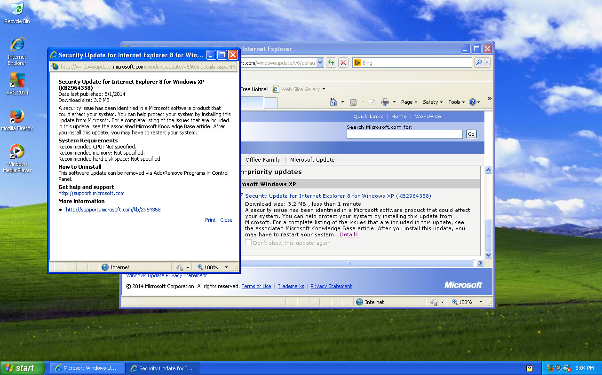

Even though Microsoft ended support for Windows XP last month, they still issued this security update to fix a critical bug in Internet Explorer. The update is also available for embedded XP systems as well as newer versions of Windows.
KB2964358 on Microsoft’s web site (note: separate versions are available for different versions of Internet Explorer, as well as 64-bit versions of Windows XP.)